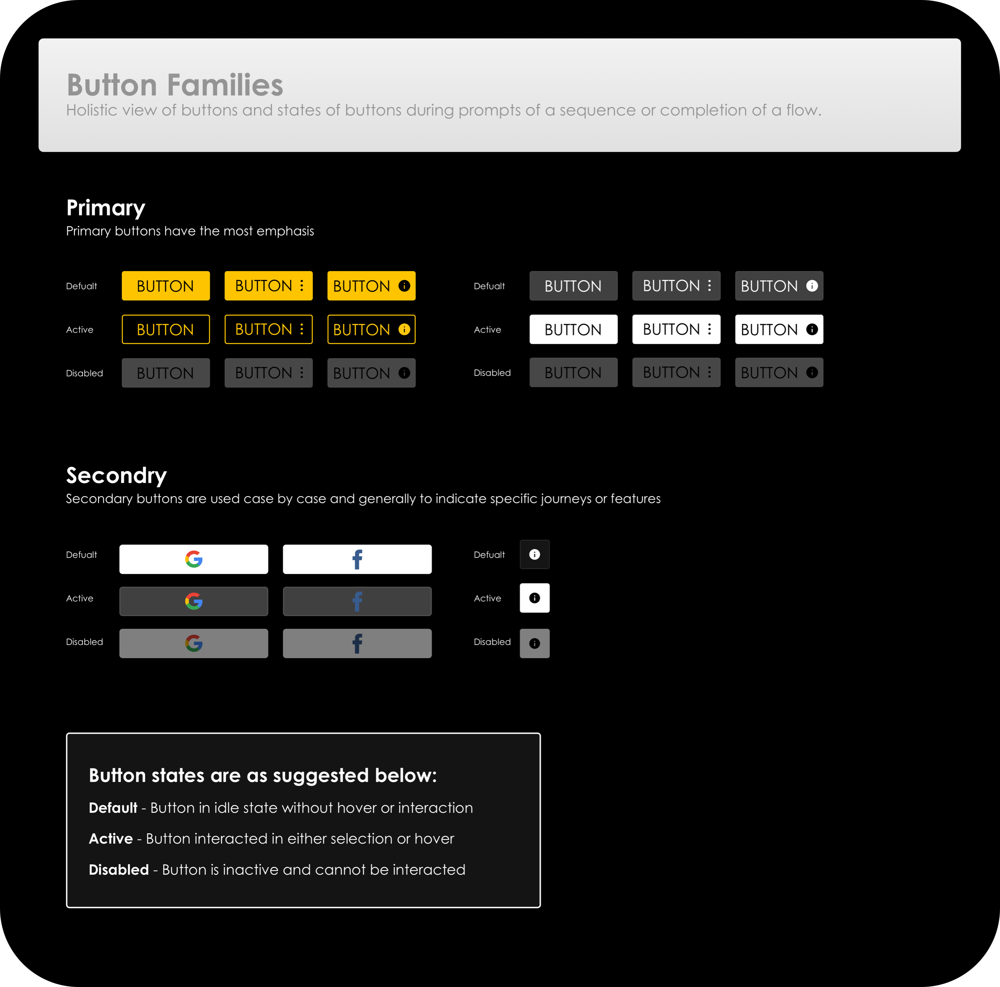
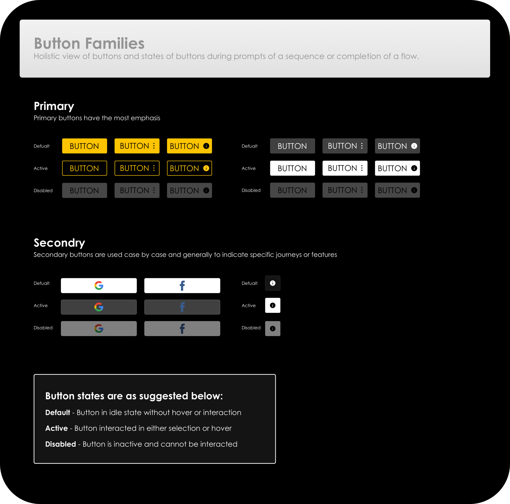

VISION247
•
2020
To the broadcasters and TV channel owners, Vision247 has been a long standing member of the OTT and playout world in the UK, bringing and building channels to their network of services and expertise to truly optimise channels, sculpting their foundations and scalability in the broadcasting world.
While Vision247 has been well recognized for its services, but never making the leap to produce a platform for themselves, OneHubTV would be the company's first installment of an inhouse OTT product, from years of building and establishing similar platforms for business around the globe, what could go wrong!
I was brought into the team when questions about the platform's performance, daily traffic, bounce rate and many other factors were unknown and the major statistics that were known were overall page traffic (organic & inorganic) and sign-ups and purchases. Without too much detail the problem was conversion and the UI, did not prove to be the best use of UX principles and common standards. To say the least it was just a site.
tl;dr I joined Vision247 to work on an OTT platform called ONEHUBTV, It was not built with any UX fundamentals in mind. The problem could be one of two - UX/UI did not match up to the the consumers eye credibility check enough to hand over their credit card details or the content on the site was not interesting enough. Option 2 was wrong as the platform was gaining tons of traffic through organic and inorganic ads and conversion was showing to be an issue.
Senior UI/UX Designer
UX/UI
System Design
Product Strategy
Interaciton Design
Front-end Development
Rapid Prototyping & Wireframing
Neil Higgins, Creative Director
Balsa Kokovic, Head of Engineering
Milos, Web Engineering
Djojdie, Web Engineer
Timi Ojo, Q/A Tester
Me, Analytics
Too many choke points in the customer journey and no identification of consumer personas, causing friction with look and feel and causing an alarmingly high level of bounce rate. While, the money maker! Conversions were at the top of all worries, with issues stemming from lack of thought through user flows and and lack of verbose messaging to explain the product and its quite annoyingly complex packages system!

Including the platforms packages and specifications and pricing would seem to be the thing to do, while choosing the single-page application architecture over a lengthy onboarding process panning multiple pages - but firstly some user testing with the current team whom were working at Vision247 was the call - many understood the platform and could navigate with minimal hiccups, to find what they needed, while they had a seemingly seamless experience, they all noted that the UI took them a long time to figure out as it took too many clicks to find their fix and was not reflective of the other platforms they used on a daily basis, in terms of navigation system.
As a company that had built numerous OTT platforms, this app did not seem to showcase the expertise nor highlight the vision the company first had when imagining the final MVP through to launch. Rather the initial lack of feedback and knowledge of the industries latest and greatest, had fallen to the preconceived paradigms of outdated assumptions.
For ONEHUBTV to find its footing in the competitive yet saturated streaming industry, was never based on being an industry disrupter or to ever shake up the industry in a fashion only done by the Netflix’s and the Disney’s, but rather work its way into a pocket of the population, that craved content from their country of origin, and lots of it. ONEHUBTV was built on the vision that expats/diaspora consumers and other small minority niches could get a taste of their home comforts, through streaming as so many of us do via major platforms.
By creating a funnel of content leading to actionable journeys for the user to dive deeper into the quick-start “Watch for free” or discover the content the platform has instore, which was a featured we implemented during a feedback stage, as many users wanted to see what was available on the platform before buying in (as they should!), as the credibility of the platform was totally raw to the user. Laying out a grid like background of content was based on users assigning the thought of relevancy to notable industries leaders like Netflix.

Increases in avg. session duration and conversion through one-click scenarios, with clear journeys
Opposed to various other streaming platforms, OneHubTV’s packages have tiers, while some are free, others cost is based on individual or packages of channels. Dedicated buttons for each package give the user a native feel for access through to their designated choice of viewing. All packages were given image cards stacks to help the user discover and form identity of what each package entails. The modular style of the package section was given this layout as packages are interchangeable and all combine together to give the user the “Ultimate entertainment experience”.

A closer look at modular plans section.
When forming the design for the pivotal navigation feature, we knew it would not be possible without combining ease of use and legibility when the user interacts and moves out the main 100vh, without causing visual disruption and obtrusive viewing of content on the page.
We researched and found a viable way to feature the navigation that showed legibility and versatility on all of our dynamic pages from MYHUB profile to video player and streaming pages.
The results collected through our 12 super users and 3 inhouse testers, geared our choice to combine search and profile buttons into one panel, removing distraction from the UI element and simplifying into a linear component.
During the staging and beta usage of the app we found our analytics to show user journeys and clicks taking place via the navigation component, rather than aimless clicks through the UI to find a definitive final destination for the user, as all destinations were no more than a click or two away.

A closer look at the global navigation component in use.

Anatomy & Iteration of global navigation component.
After analyzing our direct competitors, I was not sold on the general static navigation previously used on the platform. I instead took a closer look at the major players in the industry and my competitive research strategy proved to be more informative for building off - I chose to look into Disney's iOS and Android TV apps and especially Peacock as industry leaders who had solved a similar problem of navigation for both live and on-demand portions of their sites, and formed user centered components, but with flair.
The OneHubTV design overhaul pushed the product into a phase the product had not seen before, and that was the users group growing 400% (this was calculated by increases in Sign-ups). This would give us the opportunity to market to these new users through email and targeted ads to pull this audience into purchases packages on the platform.
By creating an interface with attention to industry standards and user centered design there was an avenue opened for the development team to increase in-app tagging and rebuild the mobile application in the same vein - and leave the “new OneHubTV platform” to get on with what it did best.
I worked with Neil to explored the usage of color during the rebuild and came to an understanding that the heavy use of purple our main and primary color would not do the cinematic feel we were looking for justice and sticking with the black space over a brand primary color would work best for legibility. The use of Yellow would now become the primary color used throughout the platform - some treatments below.
 

I also worked on the mobile app UI, continuing to use the same modular layout and style guide, creating a seamless transition from web to app.

After working closely with both the engineering, testing and senior stakeholders alike, we brought OneHubTV to life. We documented two barometers to gauge the success of the changes and those were - conversion and screen time of engaged users. We increased the amount of conversion by 1200% and decreased bounce rate by over 9%. While screen time rose by 350%.
The success meant we continued testing to fix any choke points and iterate any features we thought could be more fluid and intuitive and move our designs across all platforms including Android TV and all native platforms such as iOS and android.
By using resource in terms of testing and feedback we were able to produce a successful and scalable platform, which not only benefited the company, but also helped me gain some more knowledge into becoming a better designer and here are some key takeaways:
User feedback goes along way. Most issues can be dug out by yourself, but it's always reassuring to find issues of relevance to the user through feedback, but feedback also helped me leverage decision making with senior stakeholders when pushing new components in the design and making drastic changes to user journeys.
Looking deeper into the picture. From the start I thought the issue was stemming from the lack of visual appeal, but going deeper into the product's state allowed me to work out not only the issues in a visual sense, but the convoluted nature of the packages system that had been throwing users off making actionable decisions.